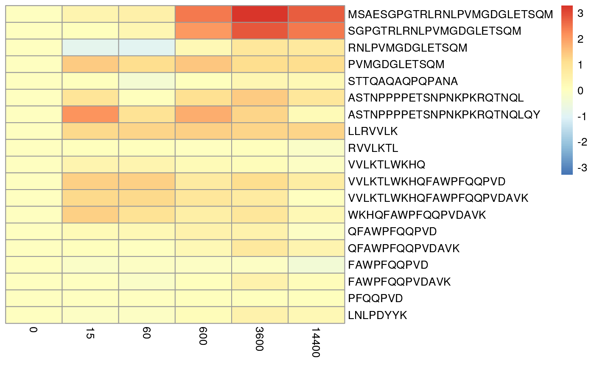
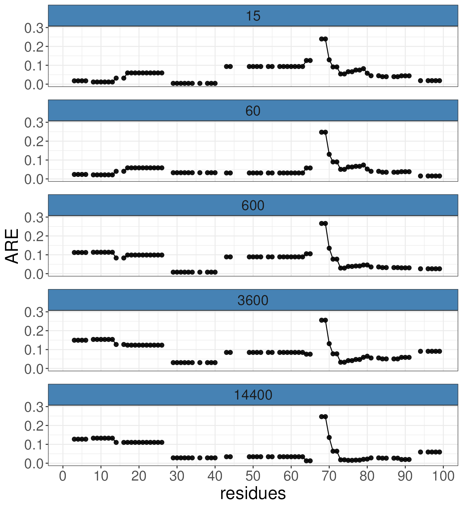
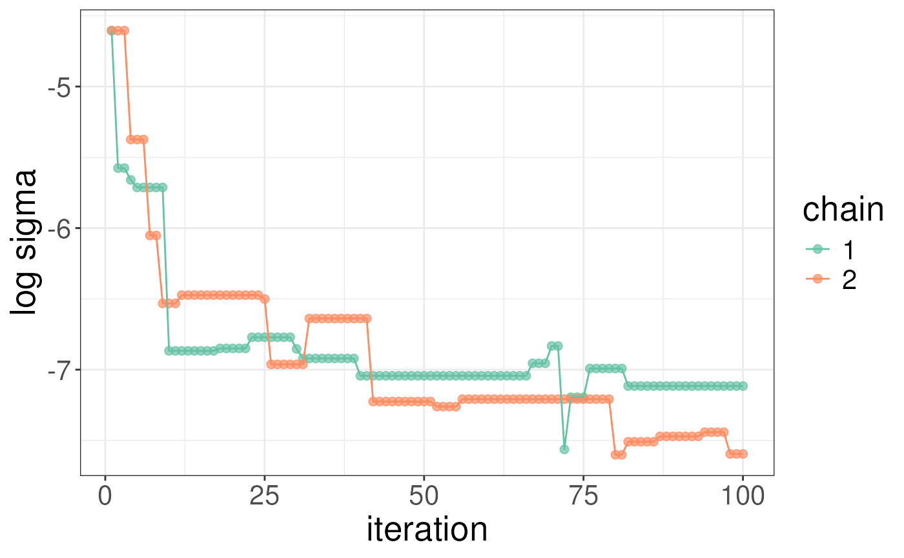
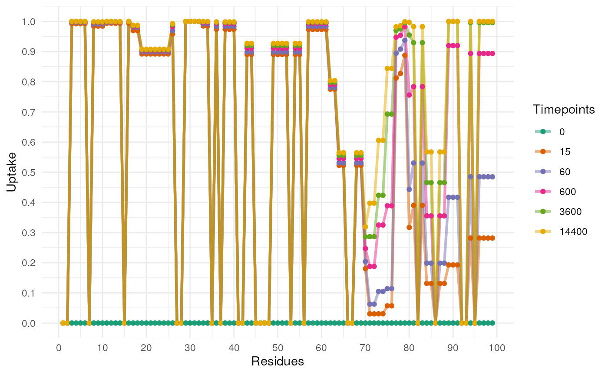
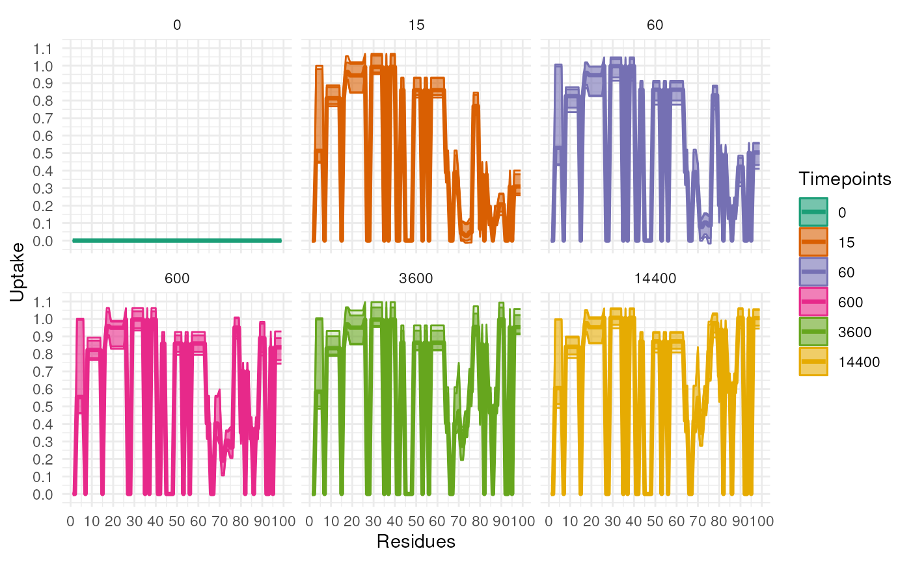

RexMS
R is an open-source statistical environment which can be
easily modified to enhance its functionality via packages. RexMS is an
R package available via the Bioconductor repository for packages.
R can be installed on any operating system from CRAN after which you can install
RexMS by
using the following commands in your R session:
if (!requireNamespace("BiocManager", quietly = TRUE)) {
install.packages("BiocManager")
}
BiocManager::install("RexMS")
## Check that you have a valid Bioconductor installation
BiocManager::valid()or from installed from github
if (!requireNamespace("remotes", quietly = TRUE)) {
install.packages("remotes")
}
remotes::install_github("ococrook/RexMS")RexMS is based on many other packages and in particular in those that have implemented the infrastructure needed for dealing with protein structures. That is, packages like Bio3D.
If you are asking yourself the question “Where do I start using Bioconductor?” you might be interested in this blog post.
We expect you to have a working understanding of HDX-MS and its application. Verifying your data is important as RexMS won’t fix problems with data acquisition or poor experiment design. If you run into problem using RexMS first check syntex of your command but also the data.
As package developers, we try to explain clearly how to use our
packages and in which order to use the functions. But R and
Bioconductor have a steep learning curve so it is critical
to learn where to ask for help. The blog post quoted above mentions some
but we would like to highlight the Bioconductor support site
as the main resource for getting help: remember to use the
RexMS tag and check the older posts.
Other alternatives are available such as creating GitHub issues and
tweeting. However, please note that if you want to receive help you
should adhere to the posting
guidelines. It is particularly critical that you provide a small
reproducible example and your session information so package developers
can track down the source of the error.
RexMS
We hope that RexMS will be useful for your research. Please use the following information to cite the package and the overall approach. Thank you!
## Citation info
citation("RexMS")
#> To cite package 'RexMS' in publications use:
#>
#> ococrook (2024). _Inferring residue level hydrogen deuterium exchange
#> with ReX_. doi:10.18129/B9.bioc.ReX
#> <https://doi.org/10.18129/B9.bioc.ReX>,
#> https://github.com/ococrook/ReX/ReX - R package version 0.99.3,
#> <http://www.bioconductor.org/packages/ReX>.
#>
#> ococrook (2024). "Inferring residue level hydrogen deuterium exchange
#> with ReX." _bioRxiv_. doi:10.1101/TODO
#> <https://doi.org/10.1101/TODO>,
#> <https://www.biorxiv.org/content/10.1101/TODO>.
#>
#> To see these entries in BibTeX format, use 'print(<citation>,
#> bibtex=TRUE)', 'toBibtex(.)', or set
#> 'options(citation.bibtex.max=999)'.RexMS
library("RexMS")Here is an example you can cite your package inside the vignette:
Let’s start with a simple use cases for RexMS. We have a protein with peptide-level HDX-MS data and we wish to gain more granular information about the HDX pattern at the level of individual residues. We can use RexMS to perform this analysis. Let’s first load some simple HDX-MS data from the package.
library(dplyr)
#>
#> Attaching package: 'dplyr'
#> The following objects are masked from 'package:S4Vectors':
#>
#> first, intersect, rename, setdiff, setequal, union
#> The following objects are masked from 'package:BiocGenerics':
#>
#> combine, intersect, setdiff, union
#> The following objects are masked from 'package:stats':
#>
#> filter, lag
#> The following objects are masked from 'package:base':
#>
#> intersect, setdiff, setequal, union
data("BRD4_apo")
BRD4_apo
#> # A tibble: 2,034 × 10
#> # Groups: DeutTime, Sequence, State, Charge [678]
#> DeutTime Charge State Exposure Start End Sequence Uptake replicate
#> <chr> <int> <chr> <dbl> <int> <int> <chr> <dbl> <int>
#> 1 0s 3 BRD4 0 1 26 MSAESGPGTRLRNLPV… 0 1
#> 2 0s 3 BRD4 0 1 26 MSAESGPGTRLRNLPV… 0 2
#> 3 0s 3 BRD4 0 1 26 MSAESGPGTRLRNLPV… 0 3
#> 4 15.00s 3 BRD4 15 1 26 MSAESGPGTRLRNLPV… 20.8 1
#> 5 15.00s 3 BRD4 15 1 26 MSAESGPGTRLRNLPV… 20.7 2
#> 6 15.00s 3 BRD4 15 1 26 MSAESGPGTRLRNLPV… 20.4 3
#> 7 60.00s 3 BRD4 60 1 26 MSAESGPGTRLRNLPV… 20.8 1
#> 8 60.00s 3 BRD4 60 1 26 MSAESGPGTRLRNLPV… 20.8 2
#> 9 60.00s 3 BRD4 60 1 26 MSAESGPGTRLRNLPV… 20.4 3
#> 10 600.00s 3 BRD4 600 1 26 MSAESGPGTRLRNLPV… 19.0 1
#> # ℹ 2,024 more rows
#> # ℹ 1 more variable: MaxUptake <dbl>The data is a data frame with the following columns:
colnames(BRD4_apo)
#> [1] "DeutTime" "Charge" "State" "Exposure" "Start" "End"
#> [7] "Sequence" "Uptake" "replicate" "MaxUptake"The data must contain the following columns:
“State”, “Sequence”, “Start”, “End”, “MaxUptake”, “Exposure”, “replicate”, “Uptake”
If you only have 1 replicate you can simply set 1 for
this column.
The function cleanHDX can be used to clean the data and
remove any missing values but also check that all the required columns
exist. The function will output an error if this simple check fails. The
RexMS package needs you to convert data to a DataFrame
object.
If you do not have a MaxUptake column you can use the
following function. You may need to use the rep function to
repeat for time points.
maxUptakes(BRD4_apo)
#> [1] 22 18 12 9 10 15 17 5 5 8 16 19 13 7 10 6 9 3 11 5 8 11 22 7 11
#> [26] 17 4 8 9 11 12 13 19 20 5 8 9 10 9 10 5 5 6 5 6 10 8 6 6 5
#> [51] 5 13 12 9 9 5 5 13 9 4 6 8 7 9 6 5 8 16 7 6 7 11 13 14 17
#> [76] 5 6 5 16 17 13 6 12 16 19 9 8 7 11 5 10 6 10 9 15 4The data is now ready to take a closer look. Be careful at this point you may have lost a large number of peptides if you had lots of missing values. At this point it will be useful to check the redundancy of the data. The following code chunk will produce a heatmap of the peptide map. As we can see from the peptide below, there are two regions that are well convered linked by a region that is not well covered. This is a common problem in HDX-MS as the region between the two tandem bromodomains is proline rich and hence not amenable to standard digestion.
C <- coverageHeatmap(res = BRD4_apo)To simplify the analysis, we only examine the first 100 residues of the protein. This will speed up the results in this vignette. Furthermore, we would recommend analysis of the bromodomains separately.
BRD4_apo <- data.frame(BRD4_apo) %>% filter(End < 100)Rex requires you to switch back to a DataFrame if you
used the last line
BRD4_apo <- DataFrame(BRD4_apo)The next step is to calculate some simple quantities from the data. The first is the number of timepoints, the second the numerical values of the timepoints and the number of peptides in the analysis.
numTimepoints <- length(unique(BRD4_apo$Exposure))
Timepoints <- unique(BRD4_apo$Exposure)
numPeptides <- length(unique(BRD4_apo$Sequence))We are already at the point were we can apply rex to the
data. The first step is to understand the necessary components of the
rex function. The rex function has a lot of
possible arguments which are explained in the documentation. The most
important are the following
HdxData which is the DataFrame containing the HDX-MS
data.numIter which is the number of iterations to run the
algorithm. Typically this will be in the thousands - 5000 would be
reasonable but is 100 below to speed up the algorithm.R which is the maximum residue number in the
protein.numtimepoints which is the number of timepoints in the
data.timepoints which is the numerical values of the
timepoints.seed which is the seed for the random number
generator.tCoef which is the coefficients for the timepoints.
This account for the fact that the variance at the 0 timepoint might be
0 (measured without error). This value is multiplied by the variance
across timepoints to scale the variance. We recommend that the first
value is 0 and the rest are 1. However, if you have a good reason to
change this value you can do so.BPPARAM which is the parallel backend to use. We
recommend using the BiocParallel package and the
SerialParam function. This will allow you to run the
algorithm in parallel on a single machine. If you have multiple cores
available you can run the algorithm in parrallel to speed up the
analysis. To do this use the bpparam() function from the
BiocParallel package. This will allow you to register the
default backend. For more advanced approaches you can see the
BiocParallel documentation.numChains which is the number of chains to run in the
algorithm. We recommend running at least 2 chains, which is the default.
This will allow you to check the convergence of the algorithm. If the
chains do not converge you can increase the number of chains and/or the
number of iterations.The less important parameters are the following but still worth knowing about:
density which is the density of the likelihood
function, whilst Gaussian is the default we have found
better results when using the laplace density. These are
the only two options available.R_lower which is the lower bound of the residues to
consider. This is useful if you have a protein with a signal peptide or
a tag that you do not want to consider in the analysis. Or you have a
construct starting at a residue other than 1.R_upper which is the upper bound of the residues to
consider. This is useful if you want to contrain the analysis to a
specific region of the protein.priors which is the priors for the analysis. This list
is elaborated on later and we refer to manuscript for more details. We
dont recommend changing this unless you have a good reason to do
so.phi this is the max uptake you allow per residue in the
analysis. This might be the deuterium content of the buffer or the
maximum uptake you expect to see.init_param this is the parameter that used to help
initialise the algorithm. The default is d. This is mostly
for development purposes and we recommend leaving this as the
default.Now, you can run the algorithm. The following code chunk will run the algorithm on the data. The algorithm will take a few minutes to run. The algorithm may output a warning about a package not being available, you can safely ignore this warning.
We typically recommend running a short number of iterations first to check how long the analysis will take and then running the full analysis.
set.seed(1)
rex_test <- rex(HdxData = BRD4_apo,
numIter = 100,
R = max(BRD4_apo$End),
density = "laplace",
numtimepoints = numTimepoints,
timepoints = Timepoints,
seed = 1L,
tCoef = c(0, rep(1, numTimepoints - 1)),
phi = 1,
BPPARAM = SerialParam())
#> Fold 1 ... Fold 2 ... Fold 3 ... Fold 4 ... Fold 5 ...
#>
#> Fold 1 ... Fold 2 ... Fold 3 ... Fold 4 ... Fold 5 ...Once the algorithm has finished running you can view the results.
First, note that rex produces an object of type
RexParams. Just printing the object will give you a summary
of the object.
rex_test
#> Object of class "RexParams"
#> Method: ReX
#> Number of chains: 2The object contains the following slots:
interval which is the interval of the analysis. This is
the interval of the residues that were analysed.chains which stores all the MCMC iterations of the
analysissummary which is a summary of the chains and the most
interesting for user. It is currently emptyseed which is the seed used in the analysis.priors which are the priors used in the analysis.method which is the method used in the analysis. This
will be ReX and is used to track development of the
package.We do not recommend access the slots directly but if you are
interested you can use the @ . For example:
rex_test@interval
#> [1] 1 99The summary slot is currently empty as it has not yet been processed.
The function RexProcess takes a number of arguments and
will populate the summary slot. The most important
arguments are the following:
HdxData which is the DataFrame containing the HDX-MS
data.params which is the RexParams object
produced by the rex function.range which is the range of MCMC iterations to
consider. This is useful if you want to remove the burn-in period of the
MCMC chain.thin which is the thinning of the MCMC chain. This is
useful if you want to reduce the size of the MCMC chain. A thin equal to
1 will keep all the iterations. A thin equal to 5 will keep every 5th
iteration.whichChains which is the chains to consider. This is
useful if you want to consider only a subset of the chains. The default
is to consider the first two chains. You may wish to remove unconverged
chains.
rex_test <- RexProcess(HdxData = DataFrame(BRD4_apo),
params = rex_test,
range = 50:100,
thin = 1,
whichChains = c(1,2))The summary slot is now populated and you can view the
results. We breifly access the slot using @ to show the
results but again we recommend using accessor functions.
rex_test@summary
#> Object of class "RexSummary"
#> Number of Residues: 99
#> Number of Timepoints: 6
#> Number of Peptides: 19
#> Number of chains: 2
#> Global resolutions: 0.003357582 0.002996947A number of functions are available to access the results. The first
is Rex.globals which will give you access to the model log
likelihood and the sigma parameter which is a measure of the variance of
the data. The lower the value of sigma the more resolved tha data is.
The model likelihood is a measure of how well the model fits the data.
The higher the value the better the fit. As we can see from the results
below in the first chain the model has fit better but the results
between the two chains a similar. We suggest to examine this first to
check that the chains are behaving similarly.
Rex.globals(rex_test)
#> DataFrame with 2 rows and 2 columns
#> sigma likelihood
#> <numeric> <numeric>
#> 1 0.00335758 -293.353
#> 2 0.00299695 -267.178We next consider the peptide error distribution. This allows us to
understand the modelling error for each peptide. The function
Rex.peptideError will give you the error distribution for
each peptide i.e. the residual of the fitted model. This benifit here is
two fold. First, making sure that the model is performing well and
secondly any peptides that may have data that is inconsistent
Rex.peptideError(rex_test)
#> DataFrame with 19 rows and 7 columns
#> Peptide 0 15 60 600
#> <character> <numeric> <numeric> <numeric> <numeric>
#> 1 MSAESGPGTRLRNLPVMGDG.. 0 -0.703474 -0.433469 1.801877
#> 2 SGPGTRLRNLPVMGDGLETSQM 0 -0.979917 -0.612909 1.395465
#> 3 RNLPVMGDGLETSQM 0 -1.911121 -1.919328 -0.412942
#> 4 PVMGDGLETSQM 0 0.406422 0.153922 0.770687
#> 5 STTQAQAQPQPANA 0 -1.697489 -2.000988 -1.304376
#> ... ... ... ... ... ...
#> 15 QFAWPFQQPVDAVK 0 -0.3131118 -0.00679573 -0.0255002
#> 16 FAWPFQQPVD 0 -0.5846490 -0.34591339 -0.3517699
#> 17 FAWPFQQPVDAVK 0 -0.2476062 -0.04841322 -0.0786488
#> 18 PFQQPVD 0 0.0618921 0.05222328 0.0712478
#> 19 LNLPDYYK 0 -0.0230843 0.02609930 -0.0970025
#> 3600 14400
#> <numeric> <numeric>
#> 1 2.676067 2.215622
#> 2 2.230865 1.897240
#> 3 0.259449 0.192393
#> 4 0.504828 0.520424
#> 5 -1.000963 -0.981169
#> ... ... ...
#> 15 0.6285702 0.37064356
#> 16 -0.1950429 -0.46167194
#> 17 0.3496879 0.10853145
#> 18 0.0520880 0.00477404
#> 19 0.0604967 0.02959979We can produce a heatmap to quickly examine the residuals. The
heatmap show some important features. First, there is a mixture of
blue and red suggesting that the model is not
biased. If the heatmap is completely red or blue this indicates some
modelling issue. Secondly, the heatmap shows that the errors are larger
for longer peptides. This is expected as the model is more uncertain
about the uptake of longer peptides and the model allows for this is
part of the fitting. The errors will also reduce by running the
algorithm for more iterations. We suggest reporting this figure in
manuscript or supplementary material.
plotPeptideError(rex_test) It maybe informative view the results in a different way by scaling the error with peptide length. This will allow you to see if the error is proportional to the length of the peptide. This is useful as the model is more uncertain about the uptake of longer peptides. This gives a different view of the data and suggest that error are mostly 10% of the uptake values but it some cases close to 20%.
plotPeptideError(HdxData = BRD4_apo,
rex_params = rex_test,
relative = TRUE)
The next step is to examine the residue error distribution. This allows
us to gain a more granular understanding of the error distribution. The
function Rex.resolution will give you the error
distribution for each residue. This completements the global resolution
metric sigma and the peptide level error metrics
Rex.resolution(rex_test)
#> DataFrame with 99 rows and 16 columns
#> Resdiues signedARE_15 signedARE_60 signedARE_600 signedARE_3600
#> <numeric> <numeric> <numeric> <numeric> <numeric>
#> 1 1 NaN NaN NaN NaN
#> 2 2 NaN NaN NaN NaN
#> 3 3 -0.0319761 -0.0197032 0.0819035 0.121639
#> 4 4 -0.0319761 -0.0197032 0.0819035 0.121639
#> 5 5 -0.0319761 -0.0197032 0.0819035 0.121639
#> ... ... ... ... ... ...
#> 95 95 NaN NaN NaN NaN
#> 96 96 -0.00461687 0.00521986 -0.0194005 0.0120993
#> 97 97 -0.00461687 0.00521986 -0.0194005 0.0120993
#> 98 98 -0.00461687 0.00521986 -0.0194005 0.0120993
#> 99 99 -0.00461687 0.00521986 -0.0194005 0.0120993
#> signedARE_14400 ARE_15 ARE_60 ARE_600 ARE_3600 ARE_14400
#> <numeric> <numeric> <numeric> <numeric> <numeric> <numeric>
#> 1 NaN NaN NaN NaN NaN NaN
#> 2 NaN NaN NaN NaN NaN NaN
#> 3 0.10071 0.0319761 0.0197032 0.0819035 0.121639 0.10071
#> 4 0.10071 0.0319761 0.0197032 0.0819035 0.121639 0.10071
#> 5 0.10071 0.0319761 0.0197032 0.0819035 0.121639 0.10071
#> ... ... ... ... ... ... ...
#> 95 NaN NaN NaN NaN NaN NaN
#> 96 0.00591996 0.00461687 0.00521986 0.0194005 0.0120993 0.00591996
#> 97 0.00591996 0.00461687 0.00521986 0.0194005 0.0120993 0.00591996
#> 98 0.00591996 0.00461687 0.00521986 0.0194005 0.0120993 0.00591996
#> 99 0.00591996 0.00461687 0.00521986 0.0194005 0.0120993 0.00591996
#> TRE_15 TRE_60 TRE_600 TRE_3600 TRE_14400
#> <numeric> <numeric> <numeric> <numeric> <numeric>
#> 1 0.0000000 0.0000000 0.0000000 0.000000 0.00000
#> 2 0.0000000 0.0000000 0.0000000 0.000000 0.00000
#> 3 -0.0319761 -0.0197032 0.0819035 0.121639 0.10071
#> 4 -0.0319761 -0.0197032 0.0819035 0.121639 0.10071
#> 5 -0.0319761 -0.0197032 0.0819035 0.121639 0.10071
#> ... ... ... ... ... ...
#> 95 0.00000000 0.00000000 0.0000000 0.0000000 0.00000000
#> 96 -0.00461687 0.00521986 -0.0194005 0.0120993 0.00591996
#> 97 -0.00461687 0.00521986 -0.0194005 0.0120993 0.00591996
#> 98 -0.00461687 0.00521986 -0.0194005 0.0120993 0.00591996
#> 99 -0.00461687 0.00521986 -0.0194005 0.0120993 0.00591996To visualise these results, we can use the following function. This will allow us to quickly examine the results. We suggest beomg cautious of data outside of 3*sqrt(sigma) as the model is likely struggling or yet to have converged at this point. Theoretically, we only expect 1% of data to exceed this value. As we can see the error distribution is very high at around residue 68. This corresponds to the peptide which had high error at peptide-level error distribution. This is expected and the model is correctly reporting where it is struggling to model that data either because of lack of convergence or the data is unusual at the point.
# calculate a threshold for the data
sqrt(Rex.globals(rex_test)$sigma)*3
#> [1] 0.1738339 0.1642331
# visualise the residue errors
plotResidueResolution(rex_test, nrow =5)
#> Warning: Removed 115 rows containing missing values or values outside the scale range
#> (`geom_point()`).
#> Warning: Removed 2 rows containing missing values or values outside the scale range
#> (`geom_line()`).
Further analysis of rex outputs is possible. In the
diagnostics slots of the RexSummary object, we get an
estimator of convergence using parrallel chains. We recommend running
iterations until the estimate is below 1.2 with results closer to 1
being generally more stable.
rex_test@summary@diagnostics
#> Point est. Upper C.I.
#> sigma 2.629461 5.502477You can plot both sigma and the model log likelihood as a function of
iterations to diagnose convergence issues. The plots below show that
sigma is still decreasing and the log likelihood still increasing but
the chains are tracking each other well. We note that all plots (except
heatmaps) are objects from ggplot and so you can customise
them using gramamatical construction in the same way as ggplot.
plotSigma(rex_test)
plotLogLikelihoods(rex_test)
# example costumisation
library(ggplot2)
library(RColorBrewer)
plotSigma(rex_test) + scale_colour_manual(values = brewer.pal(n = 3, name = "Pastel1"))
#> Scale for colour is already present.
#> Adding another scale for colour, which will replace the existing scale.
The posteriorEstimates for the parameters and their 95%
confidence can be found using the following accessors
posteriorEstimates(rex_test)
#> DataFrame with 99 rows and 5 columns
#> Residues blong pilong qlong dlong
#> <numeric> <numeric> <numeric> <numeric> <numeric>
#> 1 1 16.3281 0.0379869 0.0812807 0.0864227
#> 2 2 16.3281 0.0379869 0.0812807 0.0864227
#> 3 3 16.3281 0.0379869 0.0812807 0.0864227
#> 4 4 15.7887 0.0391645 0.0677833 0.0862207
#> 5 5 15.7887 0.0391645 0.0677833 0.0862207
#> ... ... ... ... ... ...
#> 95 95 0.0957029 0.0944723 0.523581 3.97548e-05
#> 96 96 0.0957029 0.0944723 0.523581 3.97548e-05
#> 97 97 0.0957029 0.0944723 0.523581 3.97548e-05
#> 98 98 0.0957029 0.0944723 0.523581 3.97548e-05
#> 99 99 0.0957029 0.0944723 0.523581 3.97548e-05
Rex.quantiles(rex_test)
#> DataFrame with 99 rows and 13 columns
#> Residues blong_quantiles_2.5% blong_quantiles_50% blong_quantiles_97.5%
#> <numeric> <numeric> <numeric> <numeric>
#> 1 1 6.33397 19.6427 19.7184
#> 2 2 6.33397 19.6427 19.7184
#> 3 3 6.33397 19.6427 19.7184
#> 4 4 6.33397 19.6427 19.7184
#> 5 5 6.33397 19.6427 19.7184
#> ... ... ... ... ...
#> 95 95 0.0777289 0.0965059 0.0966547
#> 96 96 0.0777289 0.0965059 0.0966547
#> 97 97 0.0777289 0.0965059 0.0966547
#> 98 98 0.0777289 0.0965059 0.0966547
#> 99 99 0.0777289 0.0965059 0.0966547
#> pilong_quantiles_2.5% pilong_quantiles_50% pilong_quantiles_97.5%
#> <numeric> <numeric> <numeric>
#> 1 0.0203128 0.021442 0.112696
#> 2 0.0203128 0.021442 0.112696
#> 3 0.0203128 0.021442 0.112696
#> 4 0.0203128 0.021442 0.112696
#> 5 0.0203128 0.021442 0.112696
#> ... ... ... ...
#> 95 0.0923607 0.0954022 0.0966571
#> 96 0.0923607 0.0954022 0.0966571
#> 97 0.0923607 0.0954022 0.0966571
#> 98 0.0923607 0.0954022 0.0966571
#> 99 0.0923607 0.0954022 0.0966571
#> qlong_quantiles_2.5% qlong_quantiles_50% qlong_quantiles_97.5%
#> <numeric> <numeric> <numeric>
#> 1 0.000244014 0.0567385 0.205337
#> 2 0.000244014 0.0567385 0.205337
#> 3 0.000244014 0.0567385 0.205337
#> 4 0.000244014 0.0567385 0.205337
#> 5 0.000244014 0.0567385 0.205337
#> ... ... ... ...
#> 95 0.515409 0.540584 0.56212
#> 96 0.515409 0.540584 0.56212
#> 97 0.515409 0.540584 0.56212
#> 98 0.515409 0.540584 0.56212
#> 99 0.515409 0.540584 0.56212
#> dlong_quantiles_2.5% dlong_quantiles_50% dlong_quantiles_97.5%
#> <numeric> <numeric> <numeric>
#> 1 0.0266353 0.028728 0.272239
#> 2 0.0266353 0.028728 0.272239
#> 3 0.0266353 0.028728 0.272239
#> 4 0.0266353 0.028728 0.272239
#> 5 0.0266353 0.028728 0.272239
#> ... ... ... ...
#> 95 1.62502e-05 1.62502e-05 3.12351e-05
#> 96 1.62502e-05 1.62502e-05 3.12351e-05
#> 97 1.62502e-05 1.62502e-05 3.12351e-05
#> 98 1.62502e-05 1.62502e-05 3.12351e-05
#> 99 1.62502e-05 1.62502e-05 3.12351e-05
colnames(Rex.quantiles(rex_test))
#> [1] "Residues" "blong_quantiles_2.5%" "blong_quantiles_50%"
#> [4] "blong_quantiles_97.5%" "pilong_quantiles_2.5%" "pilong_quantiles_50%"
#> [7] "pilong_quantiles_97.5%" "qlong_quantiles_2.5%" "qlong_quantiles_50%"
#> [10] "qlong_quantiles_97.5%" "dlong_quantiles_2.5%" "dlong_quantiles_50%"
#> [13] "dlong_quantiles_97.5%"To visualise the results, we can use the following function. This
will predict the uptake for each residue and plot the results. The
function plotUptake will plot the results. The function has
a number of arguments but the most important are the following:
Uptake which is the object produced by the
uptakePredict function.facet which is a logical value indicating whether to
facet the plot (facets by timepoints)values which is a vector of colours to use in the plot
of timepointsnrow which is an integer value indicating the number of
rows in the facet.
Uptake <- uptakePredict(rex_test)
plotUptake(Uptake)
#> Warning in brewer.pal(9, "Dark2"): n too large, allowed maximum for palette Dark2 is 8
#> Returning the palette you asked for with that many colors
The previous plot is useful to see the general uptake but doesn’t
incoperate the uncertainty in the model. The following plot will show
the uptake with the uncertainty. First, we have to sample from the
posterior distribution of the model. This is done using the
marginalEffect function. The function has a number of
arguments but the most important are the following:
params which is the RexParams object
produced by the rex function.method which is the method used to genrate the
posterior samples. The default is ‘fitted’ which will give the fitted
values and only accounts for the uncertainty in the model coefficients.
The other option is ‘predict’ which accounts for the observation-level
uncertainty and the uncertainty in the model parameters.tCoef which is the coefficients for the timepoints.
This account for the fact that the variance at the 0 timepoint might be
0 (measured without error). This value is multiplied by the variance
across timepoints to scale the variance. We recommend that the first
value is 0 and the rest are 1. However, if you have a good reason to
change this value you can do so.
samples <- marginalEffect(rex_test,
method = "predict",
tCoef = c(0, rep(1, numTimepoints - 1)))
plotUptakeUncertainty(samples)
#> Warning in brewer.pal(9, "Dark2"): n too large, allowed maximum for palette Dark2 is 8
#> Returning the palette you asked for with that many colors
The RexMS package (ococrook, 2024) was made possible thanks to:
This package was developed using biocthis.
Code for creating the vignette
## Create the vignette
library("rmarkdown")
system.time(render("RexMS.Rmd", "BiocStyle::html_document"))
## Extract the R code
library("knitr")
knit("RexMS.Rmd", tangle = TRUE)Date the vignette was generated.
#> [1] "2024-04-08 14:37:56 UTC"Wallclock time spent generating the vignette.
#> Time difference of 2.314 minsR session information.
#> ─ Session info ───────────────────────────────────────────────────────────────────────────────────────────────────────
#> setting value
#> version R version 4.3.2 (2023-10-31)
#> os Ubuntu 22.04.3 LTS
#> system x86_64, linux-gnu
#> ui X11
#> language en
#> collate en_US.UTF-8
#> ctype en_US.UTF-8
#> tz UTC
#> date 2024-04-08
#> pandoc 3.1.1 @ /usr/local/bin/ (via rmarkdown)
#>
#> ─ Packages ───────────────────────────────────────────────────────────────────────────────────────────────────────────
#> package * version date (UTC) lib source
#> abind 1.4-5 2016-07-21 [1] RSPM (R 4.3.0)
#> backports 1.4.1 2021-12-13 [1] RSPM (R 4.3.0)
#> bibtex 0.5.1 2023-01-26 [1] RSPM (R 4.3.0)
#> bio3d 2.4-4 2022-10-26 [1] RSPM (R 4.3.0)
#> Biobase 2.62.0 2023-10-24 [1] Bioconductor
#> BiocGenerics * 0.48.1 2023-11-01 [1] Bioconductor
#> BiocManager 1.30.22 2023-08-08 [2] CRAN (R 4.3.2)
#> BiocParallel 1.36.0 2023-10-24 [1] Bioconductor
#> BiocStyle * 2.30.0 2023-10-24 [1] Bioconductor
#> bitops 1.0-7 2021-04-24 [1] RSPM (R 4.3.0)
#> bookdown 0.38 2024-03-04 [1] RSPM (R 4.3.0)
#> bslib 0.7.0 2024-03-29 [2] RSPM (R 4.3.0)
#> cachem 1.0.8 2023-05-01 [2] RSPM (R 4.3.0)
#> calibrate 1.7.7 2020-06-19 [1] RSPM (R 4.3.0)
#> cli 3.6.2 2023-12-11 [2] RSPM (R 4.3.0)
#> cluster 2.1.6 2023-12-01 [3] RSPM (R 4.3.0)
#> coda 0.19-4.1 2024-01-31 [1] RSPM (R 4.3.0)
#> codetools 0.2-20 2024-03-31 [3] RSPM (R 4.3.0)
#> colorspace 2.1-0 2023-01-23 [1] RSPM (R 4.3.0)
#> comprehenr 0.6.10 2021-01-31 [1] RSPM (R 4.3.0)
#> crayon 1.5.2 2022-09-29 [2] RSPM (R 4.3.0)
#> DBI 1.2.2 2024-02-16 [1] RSPM (R 4.3.0)
#> dbplyr 2.5.0 2024-03-19 [1] RSPM (R 4.3.0)
#> DelayedArray 0.28.0 2023-10-24 [1] Bioconductor
#> desc 1.4.3 2023-12-10 [2] RSPM (R 4.3.0)
#> digest 0.6.35 2024-03-11 [2] RSPM (R 4.3.0)
#> dplyr * 1.1.4 2023-11-17 [1] RSPM (R 4.3.0)
#> evaluate 0.23 2023-11-01 [2] RSPM (R 4.3.0)
#> fansi 1.0.6 2023-12-08 [2] RSPM (R 4.3.0)
#> farver 2.1.1 2022-07-06 [1] RSPM (R 4.3.0)
#> fastmap 1.1.1 2023-02-24 [2] RSPM (R 4.3.0)
#> fs 1.6.3 2023-07-20 [2] RSPM (R 4.3.0)
#> generics 0.1.3 2022-07-05 [1] RSPM (R 4.3.0)
#> genlasso 1.6.1 2022-08-22 [1] RSPM (R 4.3.0)
#> GenomeInfoDb 1.38.8 2024-03-15 [1] Bioconductor 3.18 (R 4.3.2)
#> GenomeInfoDbData 1.2.11 2024-03-31 [1] Bioconductor
#> GenomicRanges 1.54.1 2023-10-29 [1] Bioconductor
#> ggplot2 * 3.5.0 2024-02-23 [1] RSPM (R 4.3.0)
#> glue 1.7.0 2024-01-09 [2] RSPM (R 4.3.0)
#> gtable 0.3.4 2023-08-21 [1] RSPM (R 4.3.0)
#> highr 0.10 2022-12-22 [2] RSPM (R 4.3.0)
#> htmltools 0.5.8.1 2024-04-04 [2] RSPM (R 4.3.0)
#> htmlwidgets 1.6.4 2023-12-06 [2] RSPM (R 4.3.0)
#> httpuv 1.6.15 2024-03-26 [2] RSPM (R 4.3.0)
#> httr 1.4.7 2023-08-15 [2] RSPM (R 4.3.0)
#> igraph 2.0.3 2024-03-13 [1] RSPM (R 4.3.0)
#> IRanges 2.36.0 2023-10-24 [1] Bioconductor
#> jquerylib 0.1.4 2021-04-26 [2] RSPM (R 4.3.0)
#> jsonlite 1.8.8 2023-12-04 [2] RSPM (R 4.3.0)
#> knitr 1.46 2024-04-06 [2] RSPM (R 4.3.0)
#> labeling 0.4.3 2023-08-29 [1] RSPM (R 4.3.0)
#> LaplacesDemon 16.1.6 2021-07-09 [1] RSPM (R 4.3.0)
#> later 1.3.2 2023-12-06 [2] RSPM (R 4.3.0)
#> lattice 0.22-6 2024-03-20 [3] RSPM (R 4.3.0)
#> lifecycle 1.0.4 2023-11-07 [2] RSPM (R 4.3.0)
#> limma 3.58.1 2023-10-31 [1] Bioconductor
#> lubridate 1.9.3 2023-09-27 [1] RSPM (R 4.3.0)
#> magrittr 2.0.3 2022-03-30 [2] RSPM (R 4.3.0)
#> MASS 7.3-60.0.1 2024-01-13 [3] RSPM (R 4.3.0)
#> Matrix 1.6-5 2024-01-11 [3] RSPM (R 4.3.0)
#> MatrixGenerics 1.14.0 2023-10-24 [1] Bioconductor
#> matrixStats 1.2.0 2023-12-11 [1] RSPM (R 4.3.0)
#> memoise 2.0.1 2021-11-26 [2] RSPM (R 4.3.0)
#> mgcv 1.9-1 2023-12-21 [3] RSPM (R 4.3.0)
#> mime 0.12 2021-09-28 [2] RSPM (R 4.3.0)
#> minpack.lm 1.2-4 2023-09-11 [1] RSPM (R 4.3.0)
#> MultiAssayExperiment 1.28.0 2023-10-24 [1] Bioconductor
#> MultiDataSet 1.30.0 2023-10-24 [1] Bioconductor
#> munsell 0.5.1 2024-04-01 [1] RSPM (R 4.3.0)
#> NGLVieweR 1.3.1 2021-06-01 [1] RSPM (R 4.3.0)
#> nlme 3.1-164 2023-11-27 [3] RSPM (R 4.3.0)
#> permute 0.9-7 2022-01-27 [1] RSPM (R 4.3.0)
#> pheatmap 1.0.12 2019-01-04 [1] RSPM (R 4.3.0)
#> pillar 1.9.0 2023-03-22 [2] RSPM (R 4.3.0)
#> pkgconfig 2.0.3 2019-09-22 [2] RSPM (R 4.3.0)
#> pkgdown 2.0.7 2022-12-14 [2] RSPM (R 4.3.0)
#> plyr 1.8.9 2023-10-02 [1] RSPM (R 4.3.0)
#> promises 1.3.0 2024-04-05 [2] RSPM (R 4.3.0)
#> purrr 1.0.2 2023-08-10 [2] RSPM (R 4.3.0)
#> qqman 0.1.9 2023-08-23 [1] RSPM (R 4.3.0)
#> R6 2.5.1 2021-08-19 [2] RSPM (R 4.3.0)
#> ragg 1.3.0 2024-03-13 [2] RSPM (R 4.3.0)
#> RColorBrewer * 1.1-3 2022-04-03 [1] RSPM (R 4.3.0)
#> Rcpp 1.0.12 2024-01-09 [2] RSPM (R 4.3.0)
#> RCurl 1.98-1.14 2024-01-09 [1] RSPM (R 4.3.0)
#> RefManageR * 1.4.0 2022-09-30 [1] RSPM (R 4.3.0)
#> RexMS * 0.99.3 2024-04-08 [1] Bioconductor
#> rlang 1.1.3 2024-01-10 [2] RSPM (R 4.3.0)
#> rlog 0.1.0 2021-02-24 [1] RSPM (R 4.3.0)
#> rmarkdown 2.26 2024-03-05 [2] RSPM (R 4.3.0)
#> ropls 1.34.0 2023-10-24 [1] Bioconductor
#> S4Arrays 1.2.1 2024-03-04 [1] Bioconductor 3.18 (R 4.3.2)
#> S4Vectors * 0.40.2 2023-11-23 [1] Bioconductor 3.18 (R 4.3.2)
#> sass 0.4.9 2024-03-15 [2] RSPM (R 4.3.0)
#> scales 1.3.0 2023-11-28 [1] RSPM (R 4.3.0)
#> sessioninfo * 1.2.2 2021-12-06 [2] RSPM (R 4.3.0)
#> shiny 1.8.1.1 2024-04-02 [2] RSPM (R 4.3.0)
#> SparseArray 1.2.4 2024-02-11 [1] Bioconductor 3.18 (R 4.3.2)
#> statmod 1.5.0 2023-01-06 [1] RSPM (R 4.3.0)
#> stringi 1.8.3 2023-12-11 [2] RSPM (R 4.3.0)
#> stringr 1.5.1 2023-11-14 [2] RSPM (R 4.3.0)
#> SummarizedExperiment 1.32.0 2023-10-24 [1] Bioconductor
#> systemfonts 1.0.6 2024-03-07 [2] RSPM (R 4.3.0)
#> textshaping 0.3.7 2023-10-09 [2] RSPM (R 4.3.0)
#> tibble 3.2.1 2023-03-20 [2] RSPM (R 4.3.0)
#> tidyr 1.3.1 2024-01-24 [1] RSPM (R 4.3.0)
#> tidyselect 1.2.1 2024-03-11 [1] RSPM (R 4.3.0)
#> timechange 0.3.0 2024-01-18 [1] RSPM (R 4.3.0)
#> utf8 1.2.4 2023-10-22 [2] RSPM (R 4.3.0)
#> vctrs 0.6.5 2023-12-01 [2] RSPM (R 4.3.0)
#> vegan 2.6-4 2022-10-11 [1] RSPM (R 4.3.0)
#> withr 3.0.0 2024-01-16 [2] RSPM (R 4.3.0)
#> xfun 0.43 2024-03-25 [2] RSPM (R 4.3.0)
#> xml2 1.3.6 2023-12-04 [2] RSPM (R 4.3.0)
#> xtable 1.8-4 2019-04-21 [2] RSPM (R 4.3.0)
#> XVector 0.42.0 2023-10-24 [1] Bioconductor
#> yaml 2.3.8 2023-12-11 [2] RSPM (R 4.3.0)
#> zlibbioc 1.48.2 2024-03-13 [1] Bioconductor 3.18 (R 4.3.2)
#>
#> [1] /__w/_temp/Library
#> [2] /usr/local/lib/R/site-library
#> [3] /usr/local/lib/R/library
#>
#> ──────────────────────────────────────────────────────────────────────────────────────────────────────────────────────This vignette was generated using BiocStyle (Oleś, 2023) with knitr (Xie, 2024) and rmarkdown (Allaire, Xie, Dervieux et al., 2024) running behind the scenes.
Citations made with RefManageR (McLean, 2017).
[1] J. Allaire, Y. Xie, C. Dervieux, et al. rmarkdown: Dynamic Documents for R. R package version 2.26. 2024. URL: https://github.com/rstudio/rmarkdown.
[2] M. W. McLean. “RefManageR: Import and Manage BibTeX and BibLaTeX References in R”. In: The Journal of Open Source Software (2017). DOI: 10.21105/joss.00338.
[3] ococrook. Inferring residue level hydrogen deuterium exchange with ReX. https://github.com/ococrook/ReX/ReX - R package version 0.99.3. 2024. DOI: 10.18129/B9.bioc.ReX. URL: http://www.bioconductor.org/packages/ReX.
[4] A. Oleś. BiocStyle: Standard styles for vignettes and other Bioconductor documents. R package version 2.30.0. 2023. DOI: 10.18129/B9.bioc.BiocStyle. URL: https://bioconductor.org/packages/BiocStyle.
[5] R Core Team. R: A Language and Environment for Statistical Computing. R Foundation for Statistical Computing. Vienna, Austria, 2023. URL: https://www.R-project.org/.
[6] H. Wickham. “testthat: Get Started with Testing”. In: The R Journal 3 (2011), pp. 5–10. URL: https://journal.r-project.org/archive/2011-1/RJournal_2011-1_Wickham.pdf.
[7] H. Wickham, W. Chang, R. Flight, et al. sessioninfo: R Session Information. R package version 1.2.2, https://r-lib.github.io/sessioninfo/. 2021. URL: https://github.com/r-lib/sessioninfo#readme.
[8] Y. Xie. knitr: A General-Purpose Package for Dynamic Report Generation in R. R package version 1.46. 2024. URL: https://yihui.org/knitr/.